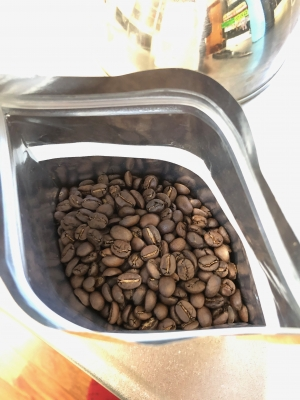
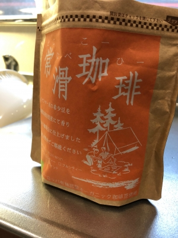

日本初解禁のコーヒーだって !
サッカースクールamaroの片岩先生の紹介で、
なんだかすんげーコーヒー豆を入手してしまいましたよ〜。
「日本初解禁コーヒー豆 ゴールデンロック」ですってよ〜 !
ホテルのラウンジとかで飲んだら、1杯3000円とか
するらしいですよ〜 ! まじですかー !!
↓


ハルがサッカーを始めた頃からお世話になっている片岩先生・・・
実はコーヒーが飲めない人なんですけど・・・ね(汗)。
なんでそんな人が、そげなスゴイコーヒー屋さんと知り合いなのか
わかんないデス・・・まじナゾ(笑)。
「ゴールデンロック」についての説明文をいただいたので
転載させていただきます。
↓
~~~~~~~~~~~~~~~~~~~~~~~~~~~~~~~~~~~~~~~~~~~~~~~~~
Genius Coffee Japan（ジーニアス珈琲）
ミャンマー産 ゴールデンロック【日本初解禁】
2014年にジーニアスコーヒーとパートナー農園は
ミャンマーで初めてのヨーロッパ、アメリカ向けのオーガニック豆を生産！
2016年6月にようやく実績が結果となりアメリカ農務省（USDA）と
ヨーロッパでのオーガニック食品認定を取得！
この珈琲はエチオピアのモカ種ティピカの原木を品種改良した木で
アジアで唯一、無農薬でオーガニックコーヒーを作っている農園です。
タイ、ミャンマー、ラオスの国境にある標高1800メートルの高地で栽培され、
年間35トンしか作れない貴重な豆を既にヨーロッパ・アメリカ・
オーストラリアに輸出しております。
アラビカ種ティピカが正式品目で、アメリカの品評会で86点を獲得した優れものです。
今まではどの商社とも取引をしておらず、海外のバイヤーの方のみと
売買を行っておりましたが、農園主の地元が愛知県常滑市なので、
出来れば地元の珈琲屋さんで取り扱っていただきたいという希望があり、
先月より国内でも販売を開始させました。
今までの納品実績はミャンマー国内のすべてのホテル、スーパー、空港免税店、
フランスのヒルトン、シェラトンホテルなどで、日本でも既に取り引きを珈琲店、
ホテルなど15社ほどスタートしております。
またこの商品は先日中京テレビでも取り上げていただき、
有名芸能人からもご好評をいただいております。
まだ日本国内でほとんど出回っていない最高級のコーヒーを
いち早く飲んでみませんか？！
~~~~~~~~~~~~~~~~~~~~~~~~~~~~~~~~~~~~~~~~~~~~~~~~~~~~~
ネットで「ジーニアス コーヒー」検索してみましたが
ミャンマーの珈琲店の記事しか出てきませんでした・・・。
ホントに日本ではめっちゃマイナーなコーヒー屋さんなんだね(汗)。
なんか23日のamaroの練習中、コーヒーの試飲会をやってくれるそうです。
先日いち早く豆を入手した我が家では、この「ゴールデンロック」
飲んでみましたが、クセのないすっきりした味のコーヒーでした。
ん〜・・・なんてゆーか、
味は上品で香りは強めなコーヒー・・・でしょうかね。
(ワタクシ・・・コーヒー評論家じゃないので、
あくまでただのコーヒー好きな個人の意見として聞いといてね。)
「ゴールデンロック」11月中はお安く提供していただけるそうですが・・・
コーヒー豆が欲しいって人はどうしたらいいんだか(汗)。
通販もしてくれるのかな〜 ?
とりあえず・・・
amaroの練習は、半田市の州の崎公園で夜7時半からやってます・・・よ(笑)。